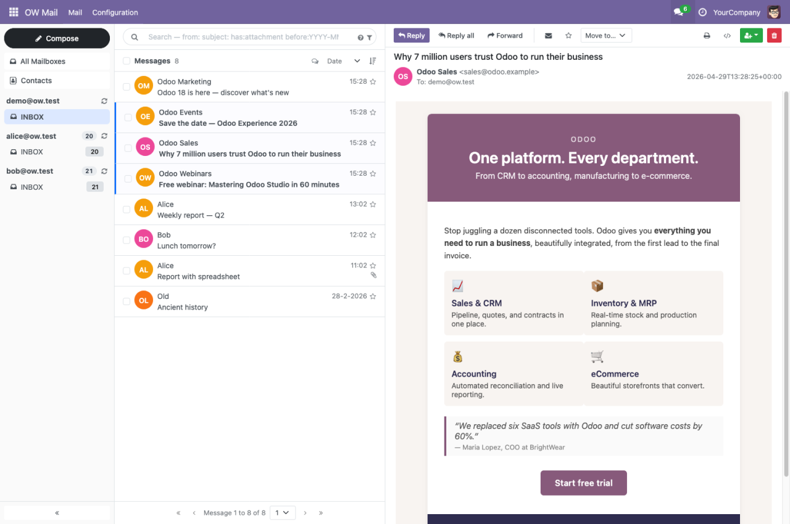

OW Mail — your inbox, inside Odoo.
A full-featured, keyboard-driven mail client embedded in the Odoo backend — without storing a single message in your database.

What it does.
OW Mail brings your personal email into Odoo — read, write, and organise messages without leaving the backend. Connect any mailbox with IMAP and SMTP credentials (or with OAuth for Gmail and Microsoft 365), manage multiple accounts side by side, and keep your inbox in sync. Each user sees only their own accounts and data.
Everything a mail client should do.
Privacy by design.
Message content is never stored in Odoo. Every message is fetched live from your mail server when you open it — your database contains no email text or attachments.
Multi-account.
Connect any number of mailboxes per user. View all inboxes in a unified All Mailboxes view, switch accounts from the sidebar, and get desktop notifications for new mail.
Message previews.
Every row in the message list shows a snippet of the body — fetched live and bandwidth-friendly, so you can triage your inbox at a glance.
Search that thinks like Gmail.
Operators like from: subject: has:attachment older_than:7d, quick filters, and cross-account smart folders for Starred and Unread mail.
Floating compose with autosave.
Multiple compose windows, minimize while you read, drag-drop attachments. Drafts autosave every 30 seconds — with a save-status line and a confirmation before closing unsaved work.
Tags that travel with your mail.
Colour-coded labels stored as standard IMAP keywords — visible from any client. Tag many messages at once from the selection bar; renaming or deleting a tag updates the server too.
Safe HTML rendering.
HTML emails render in an isolated frame — scripts and forms are blocked. Remote images and tracking pixels stay hidden until you trust the sender.
Thread view.
Messages group into conversations automatically. Expand or collapse threads inline, including the replies you sent — across Inbox and Sent together.
Bulk actions & drag-drop.
Select any number of messages and archive, delete, star, label, or move them in one go — or simply drag messages onto a folder in the sidebar.
Keyboard first.
Navigate with j/k, compose with c, archive with e — press ? for the cheatsheet. Screen-reader friendly with ARIA landmarks and visible focus.
Your reading habits, your rules.
In-client settings: choose when a message counts as read (immediately, after a few seconds, or only manually), your default view, and how the list loads — classic pages of 50 or infinite scrolling that fetches more as you go. The browser tab shows your unread count.
Inline viewer.
Embedded images show directly in the message; PDF attachments open in the browser. Print a message or inspect its raw source in one click.
Calendar invites.
Meeting invitations are detected and shown as event cards. Add them to your Odoo Calendar with one click, or download the .ics file.
Contact book.
Two-source address book: your personal mail contacts and your Odoo partners in one autocomplete. Save senders straight from a message.
Folder management.
Create, rename, move, subscribe, and empty IMAP folders without leaving Odoo — changes land on your mail server, so every other client sees them too.
Works on mobile.
The three-pane layout collapses to a single pane on phones and tablets, with a slide-out folder drawer, full-screen compose, a compact one-row toolbar with overflow menu, and a floating reply button while you read.
HTML signatures.
Per-account rich HTML signatures with configurable placement — above or below the quoted original. Toggle per message.
Odoo integration.
Create a contact, task, lead, opportunity, sales order, or ticket straight from an email via a prefilled dialog — the message and its attachments land in the record's chatter. Linked records show as chips next to the message, and the link survives moving or archiving the mail. Senders that match an Odoo contact get a Customer badge.
Replies file themselves.
Opt-in per mailbox: when a reply arrives in a conversation that is already linked to an Odoo record, it is posted to that record's chatter automatically — as a quiet note, in your name, without notification mails.
Dark mode.
Light, dark, or follow your Odoo theme and operating system — per user, switching live without a reload. Message content, dialogs, and scrollbars all follow along; printing always stays light.
Secure credentials.
IMAP and SMTP passwords are stored encrypted. They are never accessible through Odoo's UI or API — only used server-side at connection time.
Gmail & Microsoft 365 — OAuth 2.0. Beta
Install the free companion module OW Mail OAuth
(ow_mail_oauth,
currently in beta) to connect Gmail and Microsoft 365 mailboxes with modern
OAuth 2.0 (XOAUTH2) sign-in — no passwords, and fully compatible with Microsoft's
retirement of basic authentication. Existing password accounts keep working unchanged.
Gmail.
Wizard preset with the official Google consent screen. One-time Google Cloud app registration — a step-by-step guide is included.
Microsoft 365 / Outlook.
Wizard preset with Microsoft sign-in (Azure / Entra ID app registration). One token covers both reading (IMAP) and sending (SMTP).
Per-user connect flow.
An administrator enters the app credentials once; after that every user links their own mailbox. Tokens refresh automatically in the background.
Beta status: fully unit-tested — the end-to-end OAuth flow depends on your provider app registration. Feedback from real-world tenants is welcome.
Up and running in minutes.
Built to keep your mail yours.
FAQ.
Does this replace Odoo's built-in Discuss / mail module?
No. OW Mail is for external personal email — the messages in your own mailbox. Odoo's built-in mail module handles internal communication on records (CRM leads, helpdesk tickets, etc.) and keeps working unchanged.
Are my emails stored in Odoo?
No. Messages are fetched live from your mail server each time you open them. Only your account settings, tags, and contacts are stored in Odoo — no message content.
Which mail providers are supported?
Any provider that supports standard IMAP and SMTP with password authentication — including Fastmail, Proton Mail (via bridge), Dovecot, Hetzner, and most business mail hosting. Gmail and Microsoft 365 are supported through the free OW Mail OAuth companion module (currently in beta), which adds OAuth 2.0 sign-in.
How does the Gmail / Microsoft 365 support work?
Install the OW Mail OAuth module and register a (free) app with Google Cloud and/or Azure — a step-by-step guide is included. After an administrator enters the app credentials once, every user connects their own mailbox through the provider's official consent screen. No passwords are stored in Odoo; access tokens refresh automatically.
Can multiple users share one mail account?
No — each account belongs to one Odoo user. If several people need access to the same mailbox, each should add it separately under their own login.
Are there extra server requirements?
No extra infrastructure needed. The module requires two Python packages — cryptography and lxml — which are included in the official Odoo Docker image and most managed hosting environments.